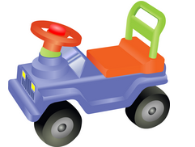
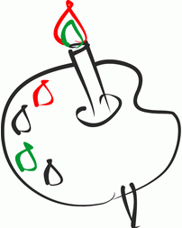

За рулём сижу довольный —
Ездить просто и легко!
Только руль чуть-чуть огромный
И педали далеко
Мне купили паровозик,
Сраазу два вагона возит
Я включаю .уго и он
За собой везёт вагон.
Вот бы мне в нем покататься,
Только жаль — не поместиться.

Нарисую я в альбоме
Голубое море ,
Белыйпарус над волною
Бьётся на просторе.
Подумать, почему для файла самого задания (childbook.png) использован
формат PNG.:
Для файла использовался данный формат , поскольку при использовании этого
формата все
показанные картинки в хорошем качестве без каких либо искажений ,
размытостей , ариолов и тд.
Хоть и для последней катинки подходит формат GIF в данном случае это нам
роли не сыграет и логичней сделать все в одном формате,
нежели создавть отдельный файл для последней картинки . Вес этого файла не
так уж велик чтобы создавать их отдельно.
Если взять значительно большее количество картинок к примеру 1000 и
половина из них может так же хорошо отображаться как и в PNG , тогда
логичней пределать их в формат GIF
что значительно уменьшит размер сайта и скорость его прогрузки .